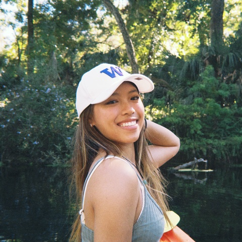

基本信息
备注
大二且finance但是resume格式还是不标准 (这个我来找补一句，这格式一看就是osg改的英文简历然后她直接chatGPT翻译成中文了，格式是翻译的问题）
1-page Resume (Encouraged，PDF格式，中英文均可)
Portfolio or Additional Files (Optional，PDF或视频)
请把文件名命为：first name_Last name_netid
请上传一张自己的照片，普通的生活照就可以！（只是为了面试的时候我们可以把你认出来）

查看原图
查看原图
通用问题部分
为什么想要加入CSSA？
我特别享受团队合作带来的成就感。我在高中曾担任学生会会长，创办过校歌赛、prom晚会和二手市场，积累了丰富的活动策划经验。在Middlebury时中国人较少，我尝试营造一个属于大家的小社区。如今来到康奈尔，我希望通过加入CSSA，把办活动的热情和经验贡献出来，与大家一起打造一个温暖有活力的大家庭。
你心目中CSSA是个什么样的组织？
我觉得CSSA对内是中国同学的家，为大家提供学习生活上的支持、帮助和network，让留学生活更有归属感。对外则是文化交流的平台，通过活动把中国文化传播给更广的人群，也吸引对中文和中国感兴趣的朋友加入，共同增进理解与交流。
加入CSSA之后，你最想在康奈尔校园内实现的事情是什么？
在内部方面，我希望能策划不同主题的retreat，city vibe, 自然的，音乐的等，大家一起去Airbnb小住，在多样的环境里更好地建立友谊。我也很期待和其他纽约的学校社团联动。最后我也想把中国文化在校园里推广开来，在Midd时我们就有组织包饺子、写春联的活动，让学中文的朋友也能加入其中。
内联部
第一志愿为什么选择这个部门？
选择内联部是因为我热爱营造团队氛围。高中在上海领科，我发起的校歌赛连续举办五年；演音乐剧；担任prom导演赞助宣传一条龙。我运营的NPO服务超过200人次。组组局和house party，也希望把每次团建都办成像生日派对一样的欢乐场景。我希想把这种热情和创意带给CSSA，让大家在活动中收获归属感。
外联部
之前是否有谈赞助/谈判经验？若无，请填“无”；
若有，请稍作描述。
有。Prom的时候我们拉到了OSG的赞助，校歌赛我们有拉到过汇丰银行。
第二志愿为什么选择这个部门？
我选择外联部，因为我擅长与人沟通和建立联系，也有相关经验。曾经拉赞助、处理各方协调事务，并在实习中组织过跨国合作项目。我喜欢通过这个部门的工作接触不同的组织和国内大厂公司，锻炼自己的networking能力，同时为CSSA争取更多资源和合作机会，让活动更有影响力。
是否接受部门调剂？
是